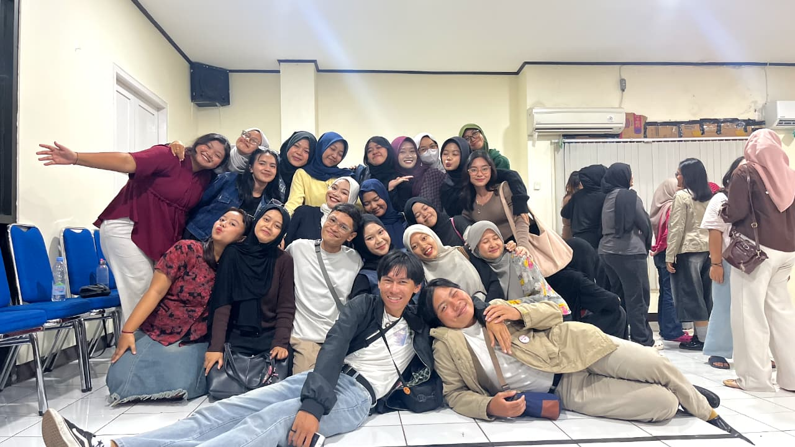
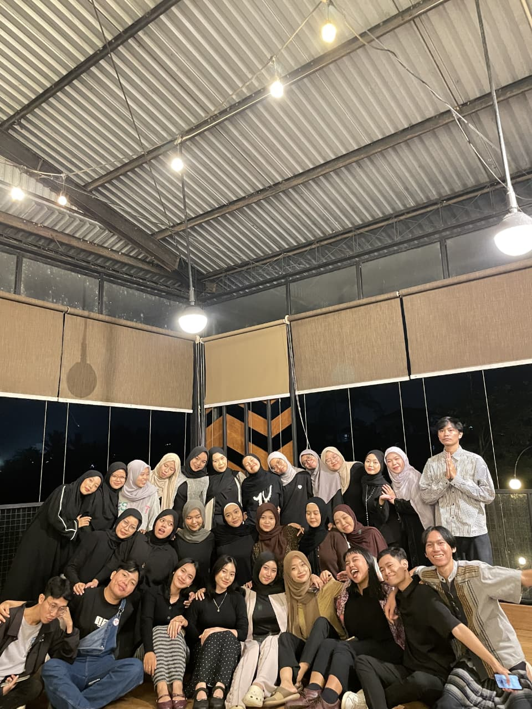
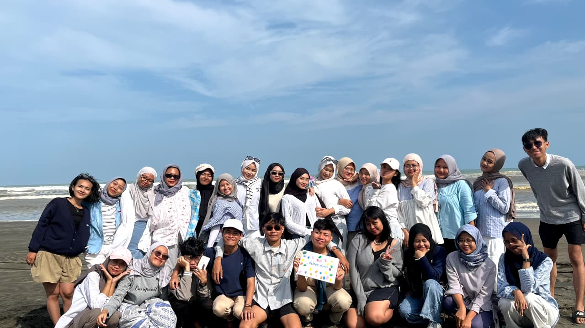
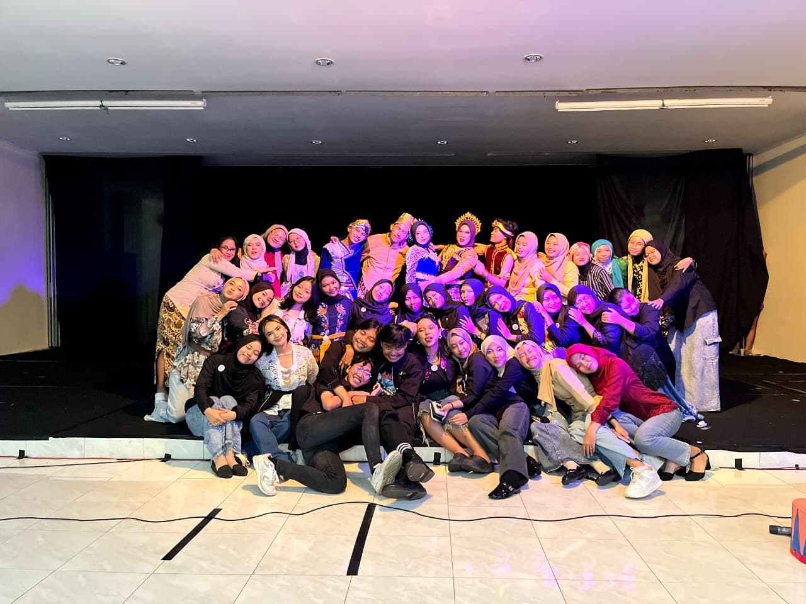
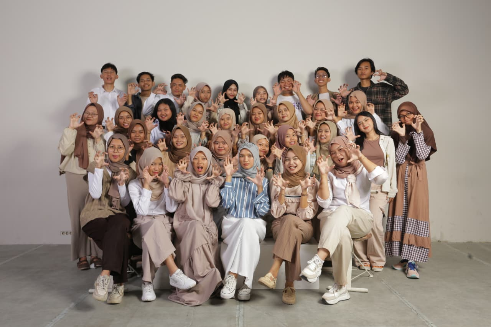

Sedikit kata untuk segenap riuh yang meruah
Hai!
Sudah akhir dari tahun ketiga, ya. Terasa, sih.

Kalau dibilang akan rindu, ya, tidak tahu. Terlalu banyak hal untuk hanya sekadar ‘akan rindu’. Namun, terlalu gengsi untuk mengatakan ‘pasti rindu’. Ya, intinya seperti itu.
Terima kasih sudah sedikit mematahkan klaim bahwa ‘orang kuliah tidak bisa dijadikan teman’. Terima kasih sudah hadir menjadi seseorang yang hampir dekat dengan kata ‘teman’. Terima kasih sudah bertahan di tempat yang sama dan menjalin hubungan lebih jauh dari sekadar kenalan.

Untuk tiga tahun ini, terima kasih sudah menyediakan sedikit ruang untuk memori. Terlampau banyak canda dan keluh yang terisi ketika kita bersama menjalani hari. Tahun pertama kita hanya memberi sebuah tanda bahwa esok hari kita akan terus berjumpa. Tahun kedua kita hanya memberi selusin alasan bahwa perlahan kita memulai arah yang sejalan. Tahun ketiga kita hanya memberi sedikit waktu untuk merasa bahwa bersama rupanya menjadi satu hal yang tidak ingin kita akhiri segera.
Untuk 36 orang di sini, terima kasih untuk segala rasa, kata, dan tawa yang menyesaki ingatan. Terlampau banyak rasa rendah diri yang membuatku selalu merasa kecil di hadapan kalian. Terlampau banyak penghiburan yang membuatku selalu merasa rupanya kehadiranku juga dihargai dan berharga dengan adanya kalian.

Untuk semua orang kelas B’23, maaf untuk segala rasa dan kata yang memberi luka pada ingatan kalian. Terlampau banyak perangai milikku yang bertolak belakang dari yang kalian inginkan. Terlampau banyak rutuk yang belum aku terima karena hal itu.
Sekali lagi, maaf untuk segala kata keluh dan gerutu yang terucap dalam benakku. Terlampau banyak harapan yang kugantung pada cara kalian bersikap padaku. Terlambat sadar bahwa kecewa ternyata hanya membuatku sedikit menjauh dari kalian.

Jika Tuhan kenankan usia kita menua bersama, tolong beri waktu sedikit kesempatan untuk merasa bahwa kita pernah hidup di masa ini. Jika Tuhan berbaik hati menyempatkan kita memiliki nyawa lebih lama, tolong tetap tumbuh bersisian dengan semua kenangan ini. Jika Tuhan bersedia untuk pertemukan kita, tolong tetap baik-baik saja hingga saat itu tiba.
Untuk semua jalan yang akan kamu pilih, aku mengharap banyak hal baik selalu teriring. Semoga Tuhan berikan waktu yang cukup lama untukmu merasa bahagia. Semoga Tuhan memeluk setiap rasa sedih yang hadir padamu hingga tenang menjadi muaranya. Semoga Tuhan menawarkan rasa nikmat untuk segala rasa yang akan terbit dari arah jalan pilihanmu.
Jika suatu saat kita berjumpa tanpa sengaja, mari menegur sapa dan membawa serta rindu yang sudah kita padu.

Untuk yang terakhir kali,
terima kasih, maaf, dan aku selalu bersyukur telah dipertemukan dengan kalian.
Tertanda,
by.aieyya